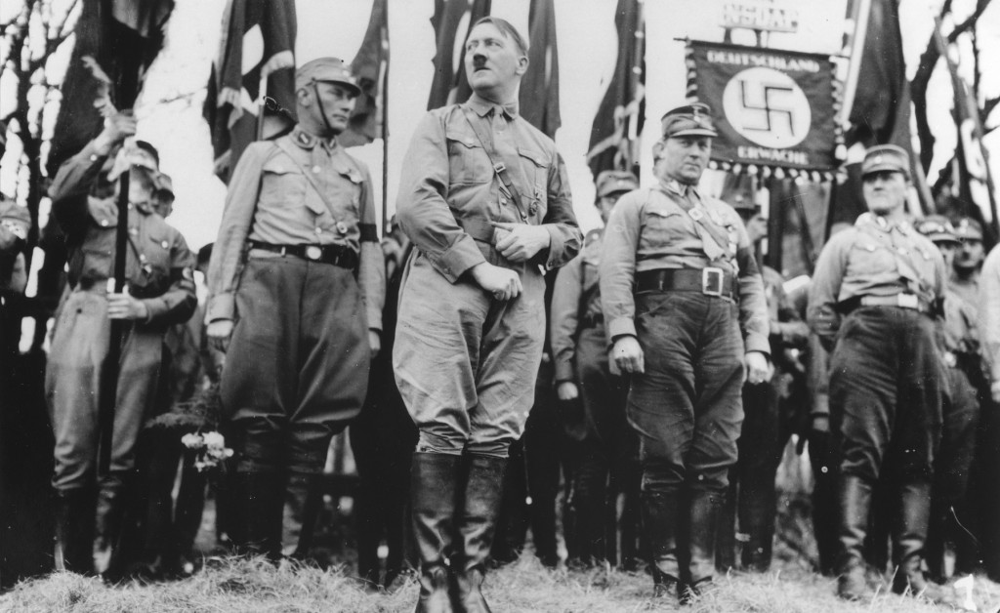
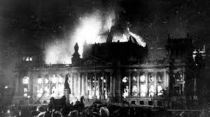
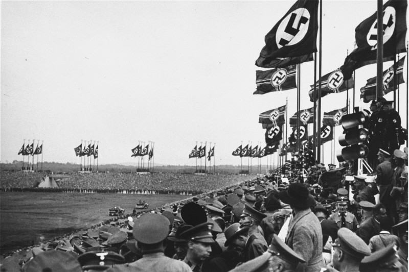

El Partido Nacionalsocialista Obrero Alemán (NSDAP), conocido como Partido Nazi, tiene sus raíces en el Partido Obrero Alemán (DAP), fundado el 5 de enero de 1919 en Múnich por Anton Drexler y Karl Harrer. Surgió en el contexto de la derrota de Alemania en la Primera Guerra Mundial, el Tratado de Versalles (1919) que impuso duras reparaciones y pérdidas territoriales, y el caos económico y político de la República de Weimar.
Adolf Hitler, un veterano de guerra austriaco, se unió al DAP en septiembre de 1919 como agente de inteligencia del ejército alemán. Rápidamente ascendió debido a sus habilidades oratorias y en febrero de 1920, el partido fue renombrado NSDAP. Ese mismo mes, se adoptó el programa de 25 puntos, que combinaba nacionalismo extremo, antisemitismo, anticomunismo y demandas sociales como la nacionalización de trusts y la reforma agraria.
En 1921, Hitler asumió el liderazgo absoluto del partido, creando las SA (Sturmabteilung) como fuerza paramilitar. El intento fallido de golpe de Estado conocido como el Putsch de Múnich el 8-9 de noviembre de 1923 llevó a su arresto, donde escribió "Mein Kampf". Tras su liberación en 1924, reorganizó el partido con las SS (Schutzstaffel) como guardia personal.
Durante la década de 1920, el NSDAP era marginal, pero la Gran Depresión de 1929 impulsó su crecimiento al explotar el desempleo masivo (6 millones en 1932) y el resentimiento contra el Tratado de Versalles. La propaganda de Joseph Goebbels, el uso de uniformes, desfiles y símbolos como la esvástica, atrajeron a las clases medias y trabajadoras.
En las elecciones de julio de 1932, el NSDAP obtuvo el 37% de los votos, convirtiéndose en el partido más grande del Reichstag. Tras intrigas políticas, el presidente Paul von Hindenburg nombró a Hitler canciller el 30 de enero de 1933, en una coalición conservadora que subestimó su ambición.
El partido prohibió opositores, sindicales y partidos rivales, estableciendo un estado de partido único mediante la Gleichschaltung (coordinación total).
El régimen nazi (1933-1945), autodenominado Tercer Reich, transformó Alemania en un estado totalitario basado en el Führerprinzip (liderazgo absoluto). Implementó políticas racistas con las Leyes de Núremberg (1935) que despojaron a judíos de ciudadanía y prohibieron matrimonios mixtos.
La expansión territorial comenzó con la remilitarización de Renania (1936), el Anschluss con Austria (1938) y la anexión de los Sudetes (Acuerdos de Múnich, 1938). La invasión de Polonia el 1 de septiembre de 1939 inició la Segunda Guerra Mundial, aliándose con Italia y Japón en el Eje.
El nazismo causó ~70-85 millones de muertes en la guerra y genocidios, dejando un legado de horror que llevó a los Juicios de Núremberg (1945-1946) y la prohibición de símbolos nazis en muchos países.
